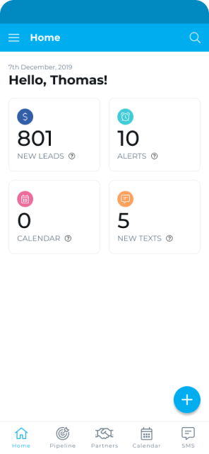
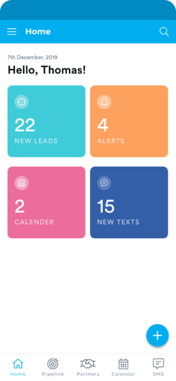
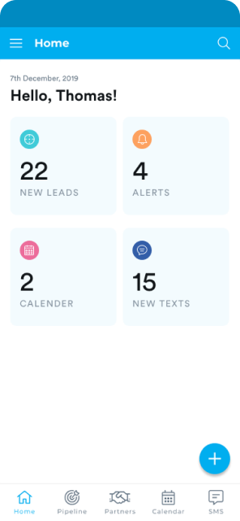
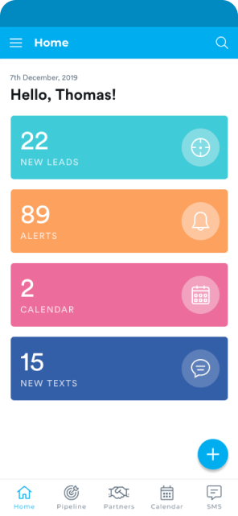
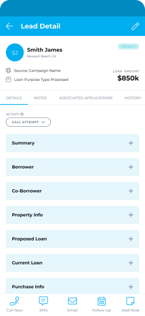
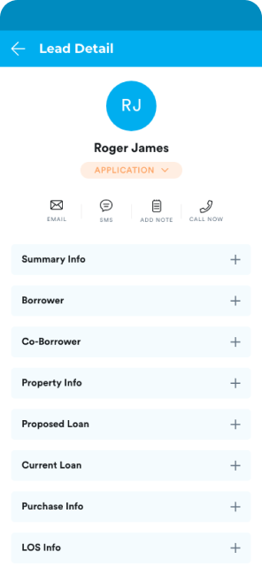
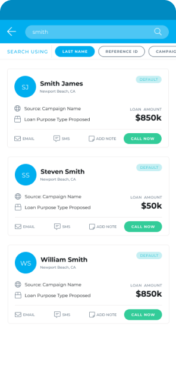
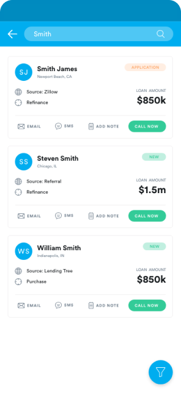

About the Project
Insellerate is a leading mortgage CRM platform that previously offered a robust web application. However, users faced challenges accessing the platform from mobile devices, which limited their ability to manage leads and engage with clients on the go. To address this issue, Insellerate commissioned the development of a mobile app that would replicate the full functionality of their web application, ensuring seamless access and enhanced user experience for loan officers.
Download App NowAgency
Webbed Studio
Year
2020
Roles
Research & Discovery
Wireframing
Prototyping
UI/UX Design
App Design
User App Flow
User Journey
User Interviews
Persona Creation
Interaction & Visual Design
Tools
Figma
Adobe XD
Zeplin
Trello
Adobe CC
Illustrator
Photoshop
Slack
Trendy angled mockups of Insellerate… but you are gonna learn all about this app in this case study!
01. Start
The project began with an initial meeting with Insellerate's stakeholders to understand their vision for the mobile app. The goal was to provide loan officers with the tools they need to engage borrowers, manage pipelines, and automate workflows from their mobile devices.
02. Research
The research phase was crucial in ensuring the success of the Insellerate mobile app. It involved understanding the client’s needs, the market landscape, and the users' requirements. This phase provided the foundation for informed design decisions, ensuring that the final product met user expectations and business goals.
I started by gaining a comprehensive understanding of Insellerate’s business model, services, and market position. This involved reviewing Insellerate’s existing web application and features. I studied the mortgage industry to understand how CRM tools are utilized by loan officers and analyzed Insellerate’s unique value proposition and how it differentiates from competitors.
To ensure the Insellerate app would be competitive, I conducted a thorough analysis of other CRM solutions available in the market. This involved identifying direct and indirect competitors, evaluating their apps to identify strengths, weaknesses, and common features, and analyzing user reviews and feedback on competitor apps to understand common pain points and best practices.
Understanding the target audience was key to designing a user-centric app. I identified the primary users as loan officers and managers within the mortgage industry. These professionals are often on the move and require mobile access to CRM tools, need efficient lead management and communication tools, and managers need real-time insights to oversee team performance.
I conducted surveys, interviews, and focus groups with current Insellerate users to gather direct feedback on their experiences and expectations. Surveys provided quantitative data on user preferences and pain points, one-on-one interviews delved deeper into specific user needs and challenges, and focus groups facilitated discussions and gathered diverse perspectives.
Users expressed a strong need for rapid access to lead information. Loan officers emphasized that being able to quickly view and manage leads from their mobile devices was crucial for maintaining productivity and ensuring timely follow-ups with clients.
Effective communication was highlighted as a top priority. Users needed tools that would allow them to easily call, text, or email clients directly from the app. This capability was essential for staying connected with borrowers and maintaining strong relationships.
With many loan officers working remotely or frequently on the move, mobile optimization became essential. Users required a mobile app that was not just a scaled-down version of the web application but was fully optimized for mobile use, offering seamless navigation and functionality.
The importance of a user-friendly interface was repeatedly underscored. Users needed an intuitive design that would minimize the learning curve and make daily tasks more efficient. A well-designed interface was seen as crucial for user satisfaction and app adoption.
Mortgage Broker
GOALS: Close more deals, manage clients efficiently, access tools on the go.
FRUSTRATIONS: Trouble accessing Insellerate on mobile, delayed responses, keeping track of clients.
NEEDS: Easy mobile access to client info, smooth communication, real-time notifications.
Loan Officer
GOALS: Manage leads effectively, improve client satisfaction, work remotely.
FRUSTRATIONS: Limited mobile access to Insellerate, task prioritization, communication issues.
NEEDS: Mobile app with CRM features, user-friendly interface, seamless integration.
03. Design Process
The wireframing process was an essential step in the designing the Insellerate mobile application. It served as a blueprint, outlining the basic structure and layout of each screen and interface element before diving into detailed design.
A robust global design system was implemented to ensure consistency and coherence throughout the Insellerate mobile app. This system encompassed various elements, including typography, color palette, and UI components, to create a unified and visually appealing user experience.

This phase was a crucial part of the UI/UX design process for the Insellerate mobile app, involving repeated cycles of designing, testing, and refining to ensure the app met user needs and business goals.
I analyzed the four screen designs based on usability, visual hierarchy, and overall user experience, noting the pros and cons of each. I then presented my findings to the customer, focusing on key aspects like ease of use, readability, and visual appeal. The customer provided feedback, appreciating the clean and professional look of the fourth design. Based on this feedback, we chose the first design "Version 1" for its minimalistic approach and clear readability, ensuring it met the customer’s expectations and user experience needs.
The "Version 1" was determined as the best choice overall. Here’s why:
This design strikes the best balance between simplicity, readability, and professionalism.
Version 1
✅
Version 2
❌
Version 3
❌
Version 4
❌
Between the two designs, the first design "Version 1" stands out as the better option for several reasons:
In conclusion, the first design offers better usability and functionality due to its fixed action buttons, detailed information display, convenient edit option, status tagging, and organized tabbed navigation.
Version 1
✅
Version 2
❌
Version 1
✅
Version 2
❌
Both designs have their merits, but the first design "VERSION 1" (on the left) seems to be more effective overall. Here’s why:
To make Insellerate feel conversational and engaging, I focused on creating friendly copy and delightful illustrations. I paid special attention to empty states, error states, and loading screens, which are often overlooked. By enhancing these areas, I aimed to make every user interaction pleasant and engaging.
NO SEARCH
NO RESULTS FOUND
NO MESSAGES
NO NOTES
The final visual designs of the Insellerate mobile app was meticulously crafted to deliver a modern, intuitive, and visually engaging user experience. Drawing inspiration from industry trends, user preferences, and Insellerate's brand identity, the visual design aimed to captivate users while enhancing usability and functionality.
The login screen allows users to enter their credentials to access the app, while the dashboard provides an overview of key functionalities and information upon successful login in a card-based layout, a well-regarded approach in UI/UX Design. There's even a greeting at the top, like "Hello Thomas!" which personalizes the experience. The navigation bar at the bottom lets you easily jump to different sections of the app.
The Insellerate profile screens prioritize a user-friendly experience by keeping things clear and concise. They display essential information like name, contact details, and relevant metrics, and avoid cluttering the screen. The right screen allows for easy editing directly within the app, eliminating the need for complex navigation. Finally, a clear "SAVE" button ensures users understand how to save their updates. Overall, these screens follow best practices in UI/UX design for user profiles by focusing on clarity, ease of editing, and user-friendly information management.
The Pipeline screen lets you search for specific deals by using the magnifying glass at the top right. Alerts screen shows information in cards with titles like "Source" and "Next Step" to make it easy to read. Overall, these screens are user-friendly because they have clear labels, well-organized information, and possibly features like search and color-coding to help you find what you need fast.

This calendar screen incorporates best practices for a user-friendly experience. The current month and date are prominent, and the highlighted current day helps you orient yourself quickly. The week view provides a clear overview of your upcoming schedule, and squares on certain dates visually indicate events without cluttering the screen. Overall, the clean interface with clear information presentation allows you to see your schedule and identify important dates at a glance.
The SMS screens in the app are easy to use. The first screen shows who you texted recently and even lets you see the last message. In each conversation (second screen), the other person's name is at the top, and the messages are organized clearly with timestamps. You can easily tell who sent what because the messages look different. Typing a new message is simple with a box at the bottom and a "Send" button next to it. Overall, everything is clear and familiar, so you can chat with ease!
These pop-up alerts in the app keep things clear and simple. They use easy-to-understand messages, like asking for confirmation before you log out or letting you know there's no internet connection. The buttons are clear too, with options like "Cancel" and "Log out" or "Try Again". The important message itself stands out, so you know what's going on before you take action. These pop-ups don't block your whole screen either, so you can still see what you were doing in the app. Overall, they make it easy to understand what's happening and take the right action
04. Conclusion
Insights from the Insellerate App Design Project.
The project showed how crucial it is to make apps accessible on mobile devices. By creating a dedicated mobile app, Insellerate improved user experience and engagement since users increasingly rely on mobile for accessing services.
Prioritizing user needs and preferences led to a more successful design. By researching, gathering feedback, and iterating, the team created an app that met users' expectations, resulting in better engagement and satisfaction.
Iterative design, involving cycles of prototyping, testing, and refining, was key to improving the app's design and usability. This approach allowed for early identification and resolution of issues, leading to a better final product.
Clear communication among team members, stakeholders, and clients ensured everyone stayed aligned throughout the project. Regular updates and feedback sessions facilitated collaboration, helping the team overcome challenges and deliver a successful outcome.